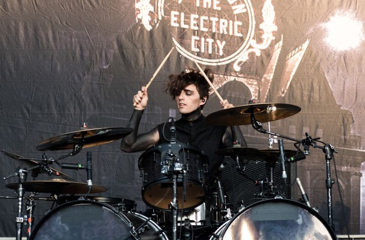

Motionless in White is an American heavy metal band from Scranton, Pennsylvania. Formed in 2005, the band consists of Chris "Motionless" Cerulli (lead vocals), Ryan Sitkowski (lead guitar), Ricky "Horror" Olson (rhythm guitar), Vinny Mauro (drums), and Justin Morrow (bass). The band has stated that their band name derived from the Eighteen Visions song "Motionless and White". Motionless in White was signed to Fearless Records for their first three studio albums; their fourth album, Graveyard Shift, was released on May 5, 2017, via Roadrunner Records. Their most recent fifth album, Disguise, was released on June 7, 2019.
The band is described by AllMusic as a blend of metalcore, gothic metal and industrial metal. The group's song structure commonly features intricate riffs coupled with occasional blast beats during verses and breakdowns present in songs. The keyboard effects are also noted, having been claimed to add a "dark and uneasy atmosphere" to the group's music on their debut album Creatures.
Motionless In White has unique lyrics as well as an outstanding vocalist,Chris "Motionless".That's why I consider it to be my Favorite band.
Chris Motionless was born in Scranton, Pennsylvania, USA, on 17th October 1986, and is currently 34 years.His birth name is Christopher Thomas Cerulli. He is the lead vocalist as well as the co-founder of the band.
Ricky ‘Horror’ Olson joined the band as a guitarist and backup vocalist in 2009. He became the permanent member of the band after Frank Polumbo’s exit. He decided to switch from bass to rhythm guitar once T.J. Bell left the group in 2011. He is also an actor and a producer.


Justin Morrow was born on May 11,in New York.He is the bassist of Motionless In White.Justin is also well known as, American bassist and musician who initially gained recognition as a member of the metalcore band Ice Nine Kills. He went on to have additional fame after joining the group Motionless In White in 2019.
Vinny Mauro was born in 1993 in Pennsylvania. He joined the band only in 2014 after 9 years after it was launched back in 2005, replacing the previous drummer. He has taken part in recording 2 of its 4 albums
Ryan Sitkowski was born on January 8, 1991 (age 30) in Pittston, Pennsylvania, United States.He is the lead guitarist of the band who replaced former guitarist Michael Costanza. He joined the band in 2009 and was a part of the band's first official single, "Ghost in the Mirror."